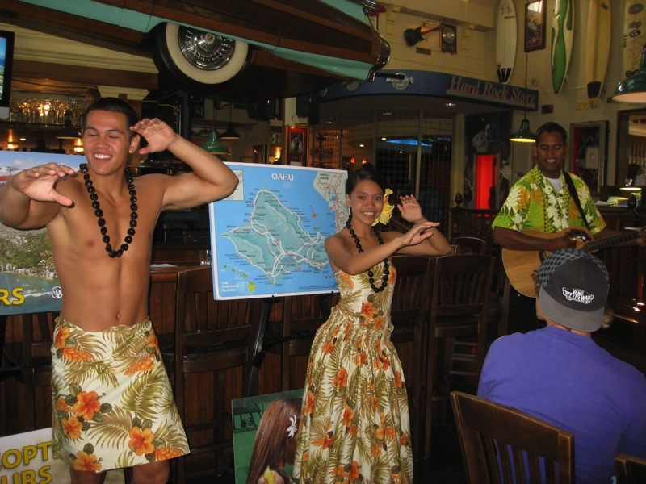
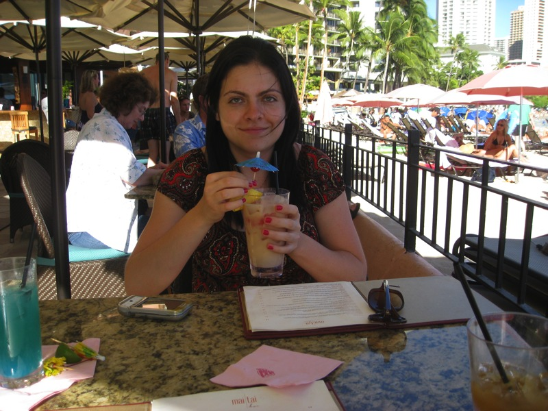
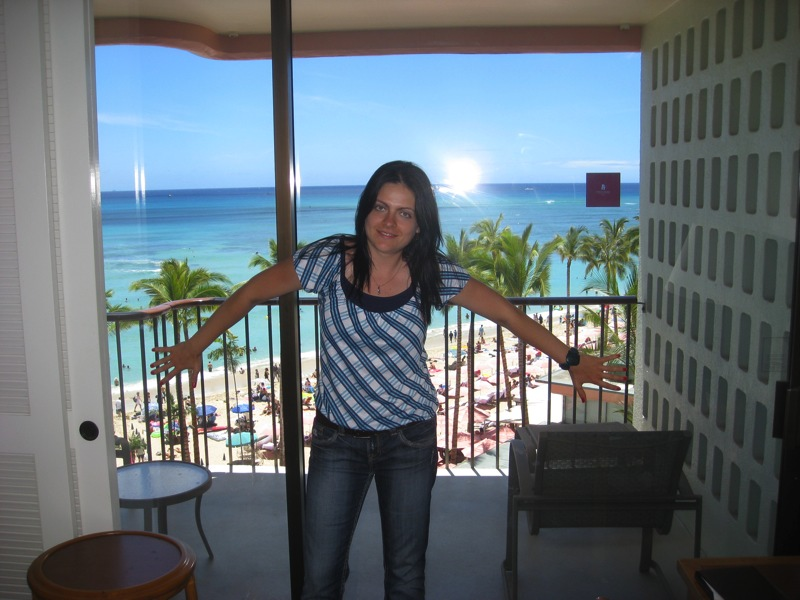
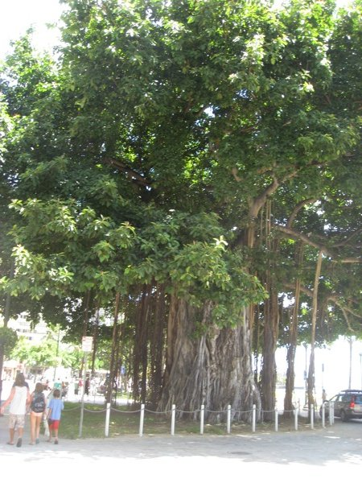

Here we are in Waikiki, listening to this Expedia "Local Expert" tell us about all these activities we can sign up for. They provided some fruit and a croissant in exchange for us listening to their sales pitch. We signed up for about $1400 worth of activities. We ended up paying about $400 of it, and successfully disputing the rest of the charges, since there was a lot we were promised that they didn't deliver. Some activities were good, some were bad.. if you go with Expedia, get everything you care about in writing.

The orientation did include a fun little dance demonstration.
We wandered around looking for sushi afterward. The orientation host caught up with us and took our picture. We didn't know she was so evil back then, so we were smiling.
In the water behind us, many fish gathered, desperately trying to warn us.
On the way we see some interesting buildings like this one.
The Royal Hawaiian is the 5 star hotel we stayed at. It certainly was the most exquisite hotel I've ever stayed in. See me appreciating the hotel's exquisiteness.
Aliona's mother loves flowers, so we made sure to get plenty of flower pictures.
The hallway of the Royal Hawaiian opens up to this green courtyard. This is important, because everything in the Royal Hawaiian is pink. That's why this page is pink too. It's classy, but I had my fill of pink by the end of the vacation.
Delicate white flowers captures Aliona's innocence.
Waikiki is probably the most touristy beach in Hawaii. That said, it's still paradise, and we had a clear view of it from our room. It was fun to people watch.
One of the activities we were sold and refunded was surf lessons, and we had them here. Our instructor was plainly a jerk who didn't want to bother with us. I did manage to stand on the board for maybe 8-10 seconds, but I really didn't learn much at all from the instructor. Aliona was clearly frustrated as well.
All was forgotten at the Hotel's "Mai Tai" bar.
As part of a hotel package which netted us a discount on parking and internet, we were given four coupons for virgin blue hawaiians. Basically 4 glasses of sweet blue juice, which neither of us wanted. We liked the pineapple slice, but not the blue juice. I later decided to give our last two coupons to a nice elderly couple who appreciated them far more than we ever would have.
These drinks were so beautiful, so it was hard not to keep taking pictures of them.

It was also hard not to keep drinking them.
As we walked behind the hotel at night, we found a grassy field that looked like it wasn't meant to be walked on. We took off our shoes and frolicked about.
This is Aliona looking pretty with the flower she found at the souvenir shop. She also found a wonderful little coconut-watch, painted blue, shaped like a cat. It was her treasured prize, but once we got home, it stopped working. I mailed it back and miraculously, we got a replacement 2 months later. It also didn't work right. We're still waiting for the second replacement.
Aliona intended to get a nice Hawaiian dress for a souvenir, but she judged it just wasn't her style.
Perhaps this is her style?
The next day we set off for our next activities, parasailing and jetskiing. We found out jetskiing was cancelled, so we got a refund. Parasailng was fun, but they didn't send us up to the height we were promised, so this was free as well. The dudes on the boat were a handful, making jokes all the time while driving the boat super-fast.
Our turn came and the parachute mercilessly pulled us into the air. Okay, this isn't exactly that time. We just got dipped into the water after being in the air for a while, but you'll see that later.
Here's us high in the sky as the boat's turning. The wind was a little unsettling and my hands were gripping the parachute straps with white knuckles, but at times I was able to relax and enjoy it. Aliona enjoyed all of it.
Here's the view of the coast we had.

The guys running the show decided to dip everyone in the water once or twice before reeling them back in. We were no exception.
And... we're in. I wasn't sure if sharks were eating Aliona at this point, but I think all of her survived so probably not.
This was the balcony for our 5th floor room. Aliona likes balconies.
She also likes my jokes. A few of them.
This is the dorkiest picture ever taken of me, but the view still makes it a beautiful shot.
We treated ourselves to some of the fancy food at the Waikiki hotels.
Looking behind me, I saw this shark doing the same. There's apparently a kid in that shark.
This is the sampling station of a Waikiki cookie store.
These exotic plants decorate a shopping area.
The third activity, which we willingly paid for, was a sea kayaking tour. Aliona and I aren't the most coordinated rowing pair, but what we lacked in skill we made up for with... well, we managed fine. There were four young girls full of excitement that left everyone in the dust, constantly yapping and singing cheerful pop music. You'd think they'd be annoying, but they were so over-the-top, you couldn't help but laugh with them.
Me immersing myself in the peaceful emerald waters, wearing my rocky necklace that Aliona made fun of, awaiting spiritual guidance from the heavens.
On one of the islands we stopped at, little endangered birds nested.
This is a rare shot of an extremely fluffy little baby endangered bird.
We were taking turns diving into a little pool of water that in the past, some form of royalty bathed in.
We took the plunge and our picture was taken shortly after. I think something or someone is tickling me here.
You have to be a talented photographer to take a bad picture in Hawaii.

This is the remains of the massive rock monster that tried to sink our kayaks. I climbed to the top and tore off its stalactite fangs, one by one, until it fainted and crashed into the sea, never to rise its head again. Okay, I'm just trying to see if anyone's still reading.
While the tour guide is merely explaining a point about some nearby islands, using directional hand gestures, it really does look like he just karate-chopped a ninja.
This looks like an artist's inspired splotches of paint.
Lanikai beach is a top beach in America, our tour guide said. We mainly cared about Chubby. These laid-back dudes had a dog that knew how to chill. We wanted to learn from Chillmaster Chubby.
Here's Aliona scratching behind the ear of Chillmaster Chubby.
Our kayaking tour group. You can see the four easily identifiable hyper-active girls in front of the tour guide. Their energy of these Spice Girls never faltered throughout the trip which took up most of the day.
A side view of Lanikai Beach before we took off, complete with the breezy palm trees.
That night we had reservations for our rooftop luau. We were seated with a nice Japanese family that didn't speak a word of English. Hawaii is near Japan so they are certainly well-represented. It was windy on the rooftop, so I thought one of the two coupons for drinks had blown away. I had to argue for my second pina colada, but then I found the coupon under my plate. My bad.
Many Hawaiian dances advertise various props and costumes, depicted here, available for purchase in the luau's souvenir shop. We were very well fed, however. For instance, all the tuna sashimi we could eat!
If you've seen enough of my pictures, you'd know I can't pass up a good rainbow pic.
During brunch, Aliona returns with a bowl of seaweed salad, and yogurt, only to find a pesky intruder making his escape from her chair.
Me hungry for more food. Something in my blood compels my stomach to digest faster at buffets.
This hotel had a serious bird problem, especially at this table.
We drove up the North Shore toward Sunset Beach, thinking it would be a good place to see a sunset, along with some champion surfers. Along the way, we couldn't pass up this roadside market which sells local foods such as pineapple, dragonfruit, and pickled mango. I, unfortunately, could not resist the pickled mango.
We found a nice beach spot and parked next to this truck. He was a good friend of Chillmaster Chubby.
I dug my feet into the sand, preparing for the sunset.
Aliona set up the hotel towels, preparing for our fruity picnic at sunset.
I love lychees. Did I mention we bought lychees at the market too? Here's me peeling a lychee nut.
We had a newspaper of some sort with us for some reason, and while on this gorgeous, peaceful beach, the wind swept some pages away. I was determined not to spoil this beach with my trash, so I ran what amounted to a quarter mile chasing the pages. On the way, another boyfriend felt bad for me and joined in the chase. He collected the pages and I was thankful. On the way back, some pages got loose again, and I ran another tenth a mile. I gave up and as I walked back in defeat, Aliona took this picture and giggled.
We weren't on Sunset Beach. That beach was a bit crowded, with no trees. Aliona insisted we find something better, and we drove down a mile to this beach. It was much better, and shockingly, it had a nice sunset too.
As the sun set, a creepy monster attacked me.
The cloudy gray sky and sweeping waves made for a dramatic backdrop for Aliona's pose.

Here's why it was unfortunate I purchased and subsequently got hooked on pickled mango.
We found a seafood place on the way back with some nice cocktails. I think the seafood was good. I can't remember. Okay, I didn't drink much at all because I had to eventually drive home, so Aliona had a lot of work to do.
Here's the plane that would take us to the Big Island for our volcano tour. We admittedly had a good time, but the entire tour ended up being free. It was difficult to dispute this charge, but we were promised to see volcanoes, the Kona coffee plantation, and a historic village. The tour ended up only including volcanoes, so I persevered.
Aliona opens one of her organic fruit strip snacks.

On the Big Island, we stopped at this Japanese garden for some photos.
More proof I was there too.
Aliona's hair flows like a waterfall. See?
The creepy beach monster almost caught up to me here. She chewed on my brains for a while but I stuffed them back in my skull and ran away.
Everyone told us to go down a path to see a beautiful watery cove. We did and were happy we made the time for it. Being on a tour, everything was much more rushed than we would have liked.
A massive active volcano waits to erupt behind Aliona.
Aliona runs away from said volcano.
I swiftly come to the rescue.
Here's us exploring a lava tube. The tour guide told us not to go into a pitch black hole that supposedly is very difficult to navigate past and only leads to a deadend. Contrary to our true nature, we decided to skip it and followed everyone else like lemmings.
We got out just in time, before everybody else got burned alive, their ashes swallowed up into the earth's core.
As a veteran of the volcanic underground, I decided to look the part.
Pele's hair is a nickname for the hair-like strands formed from a volcanic blast. It really looks like hair, see?
This was a very active volcano. Iceland's are much more dangerous, but this steam still singed my eyebrows when I leaned over it.
It was fun to line the steam up with Aliona's head, especially when she looked serious.
There was steam all over the place.
Aliona likes both flowers, and butterflies, so this made her happy.

Surfaces of volcanic rock are perfect for sci-fi movies.
I took this intending it to make it grayscale and turn it into an artsy photograph.
We also stopped at a black sand beach. They had this straw hut we hid away in, eating pineapple while enjoying the exotic scenery. I've been on a black sand beach in Positano, Italy, but this was worlds more enjoyable.
Aliona takes a nap on a rock, her belly filled with pineapple.
There was an active volcano with an exposed lava flow, but it was deemed unsafe for us to get near it. The lava was flowing into the water, and we were able to take a picture of the resulting steam, glowing red from the lava.
While we never stopped at the Kona coffee plantation, we made sure to have our 100% Kona coffee at a nice restaurant when we got back. Coffee is an acquired taste. In other words, most children won't drink it. This coffee is smooth enough where I think most could drink it. Aliona, however, consists of 70% coffee so this was very rejuvenating for her.
While sipping coffee, I noticed this bird's head was a bright color.
After the bird had moved aside, we posed for this picture.
One of the hotels had a pool that had a nearly invisible edge, so it blended with the ocean.
Occasionally we saw people drinking from pineapples so we had to try it. After we were done, we devoured the remainder of the pineapple.
The bartender saw how much we loved pineapple, so he carved up another one for us.
Our bed was very comfortable, or so Aliona tells me. I couldn't tell, because she likes sleeping diagonally across the bed.

Here's another good shot of the view we had from our room.
I thought the bed was finally free, but Aliona quickly ran in front of me and jumped back onto it.
I decided, enough was enough, and I launched myself onto the bed, not caring if she was still napping.

Dizzy from the collision, we posed for our last picture in our wonderful room at the Royal Hawaiian.

Many trees in Hawaii look like bundles of roots.
Here was the place we deemed as the best froyo spot in all of Hawaii. There was really no contest.
Checking out of the hotel, we saw decided to pose next to another flower decoration.
We stopped at grocery store to get some apples for the flight home. We were not allowed to bring them onto the plane though. These pigeons in the parking lot tried to warn us.

They sell these strings of fresh orchids in the grocery store.
Our vacation finally came to a close, and we learned that Laguardia airport is pretty nice. This coffee shop just opened up there and sells my favorite coffee. Not Kona, but we couldn't afford more of that anyway. As a last note, it looks like one of these guys has a coffee grinder for a head.
Back